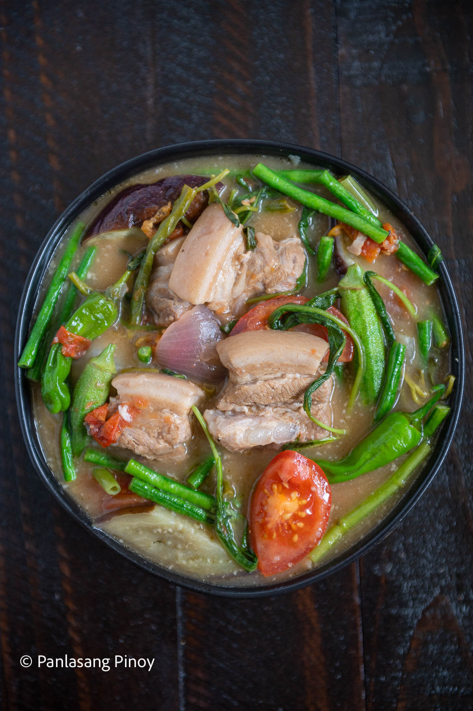

Sinigang

Authentic Pork Sinigang
Sinigang is a tamarind-based soup that is known for its sour and savory
taste. You can make it with either fish, pork belly, spare ribs or corned
beef. My favorite is with pork spare ribs, lots of veggies, and a bed of
rice.
Sinigang is a dish originated in the Philippines. Typically, it is composed of fish,
meat, vegetables, tomatoes and tamarind flavoring. The reason why it is called
“sinigang” is that it was a translation to the English word, “stew” which is true
because of its method of cooking.
Ingredients
- 2 lbs pork belly
- 1 bunch spinach
- 3 tablespoons fish sauce
- 12 pieces string beans sitaw, cut in 2 inch length
- 2 Pieces tomatio quartered
- 3 Pieces chili or banana pepper
- 1 tablespoons cooking oil
- 2 quarts water
- 1 piece onion sliced
- 2 pieces taro gabi, quartered
- 1 pack sinigang mix
Instructions
- Heat the pot and put in the cooking oil
- Saute the onion until its layers separate from each other
- Add the pork belly and cook until outer part turns light brown
- Put in the fish sauce and mix with the ingredients
- Pour the water and bring to a boil
- Add the taro and tomatoes then simmer for 40 minutes or until pork is tender
- Put in the sinigang mix and chili
- Add the string beans
- Put in the spinach, turn off the heat, and cover the pot.
- Serve hot. Share and enjoy!
Recipe taken from Panlasang Pinoy